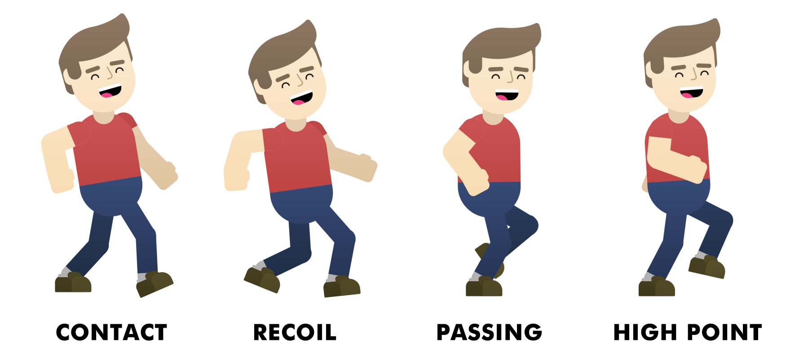

Walk Cycle
Let's stop for a moment and think about how a person walks. What movements are involved in the simple act of walking? How does the body keep its balance?
Walking is one of the most basic forms of locomotion, and for that reason it is something that most people do not think about very much. As animators though, we need to observe the world around us, and gather references from the simplest things. For an animator, the act of walking is an intricate collection of poses and nuanced details.
Walking is a naturally cyclic process. For this reason, one of the most important elements of a character's movement is what animators simply call a "walk cycle". The walk cycle is a looping animation of a character walking in place, and it not only serves to move the character around the scene, but it can also help define character traits and moods. A character might walk with confidence or run in fear, or it may drag its feet from tiredness or sadness. A walk cycle might show excitement or weariness, it may be purposeful or relaxed.
https://www.youtube.com/watch?v=HEoUhlesN9E
Because of all the nuance a walk cycle can depict, it may seem like one of the hardest aspects of the character animation process. To simplify it, we can start by breaking down a walk cycle into a few simple poses:

These poses define the extremes of your walk cycle animation. The two most important poses are the contact and passing poses, since they dictate the step length and duration of the cycle. Recoil comes right after the contact pose and it is where the character is at its lowest point, while high point happens right after the passing pose, and it is where the character is at its highest point.
In After Effects, you'll only need the contact and passing poses to start. When you have created a base walk cycle, you can start defining the recoil and high point poses. This is all you'll need to make a character walk, since the inbetweens will be created for you.
Here is a quick overview of the process of creating a basic walk cycle in After Effects:
https://drive.google.com/open?id=14M3OTNF4uPpFjgdcEsh-AbFvfSsp9Tdf
Obviously, if you stop at the initial poses, your walk will probably look very generic, so make sure to refine the inbetweens and the little details to create a walk cycle with more personality and appeal.
https://drive.google.com/open?id=1T7Cl99EU7ElZ3MKiPXiWJzrEcl-Hfq_N